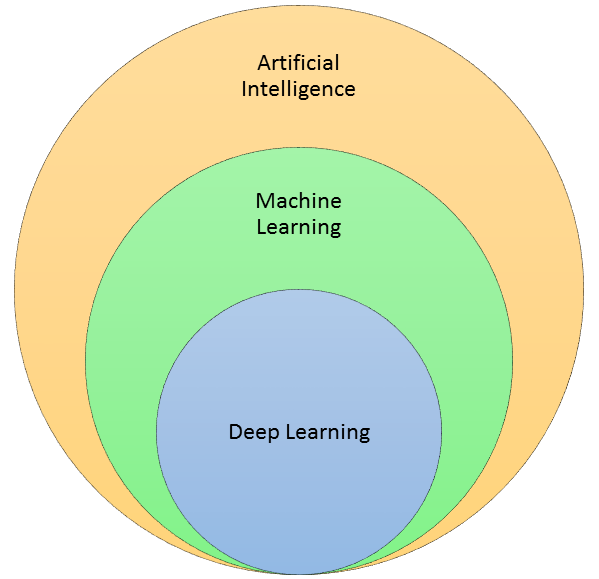
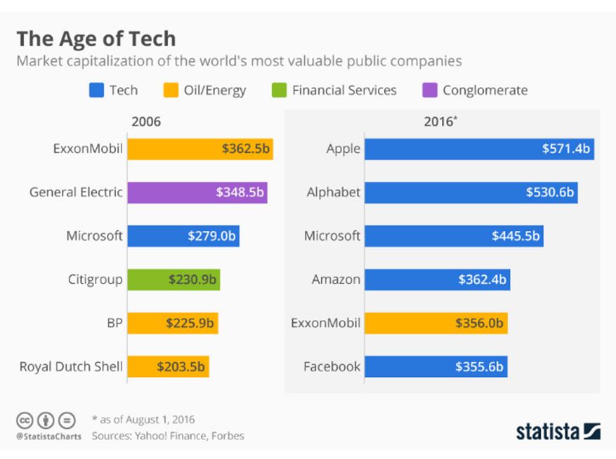

By António Cruz | January 1, 2017
Andrew Ng (VP & Chief Scientist of Baidu; Co-Chairman and Co-Founder of Coursera; Adjunct Professor at Stanford University) um dos mais reputados especialistas em Inteligência Artificial disse em Maio de 2016 que, “A inteligência artificial é a nova eletricidade! A eletricidade transformou incontáveis industrias; a IA vai fazer o mesmo.”
A Inteligência Artificial (IA) pode ser a tecnologia mais disruptiva que o mundo viu desde a Revolução Industrial. Eu acredito que a IA vai mudar positiva e materialmente como nos relacionamos com o mundo que nos rodeia, quer em termos pessoais quer profissionais.
Mas como todas as mudanças disruptivas, ela não será feita sem sacrifícios ou custos.
Machine Learning

A área da IA é enorme e vamos simplificar e generalizar como sendo um conjunto de técnicas que permitem aos computadores imitar o comportamento humano.
Dentro das técnicas de IA temos um subconjunto designado de machine learning que são métodos estatísticos que permitem aos computadores aprender com exemplos ou experiências.
E dentro do machine learning ainda temos um subconjunto mais especifico de técnicas que habilitam a computação de redes neurais multicamada.
Será na área de Machine Learning que tentarei partilhar convosco artigos, ideias, exemplos e visões.
Big Data
As mudanças potenciadas pela IA só foram possíveis pela colisão de duas tendências ou acontecimentos:
O aumento exponencial dos dados existentes, nomeadamente através da Internet das coisas. Agora, temos eletrónica e sensores de rastreamento em quase tudo. E como consequência do aumento do número de “coisas” inteligentes e conectadas, temos uma enorme quantidade de dados comportamentais disponíveis.
O aumento da capacidade computacional e do seu custo. Hoje em dia é possível em 10 minutos ter disponível uma maquina virtual com uma capacidade computacional tremenda e a preços competitivos, que há 5 anos atrás nos obrigaria a dispendiosos e demorados investimentos.
E ter dados e capacidade para os processar permite desenvolver modelos de comportamentos que nos permitem construir melhores sistemas sociais que melhoram a nossa vida.
Como curiosidade, apresento apenas dois dados:
Criou-se mais informação nos últimos dois anos que em toda a história da humanidade até essa altura. Menos de 1% destes dados são hoje analisados e utilizados;
A Internet das coisas veio para ficar e estima-se que nos próximos cinco anos existirão mais de 50 biliões de dispositivos inteligentes a recolherem e tratarem dados, em todo o mundo;
Por estas e outras razões o termo Big Data está na moda. A Big Data é muitas vezes caracterizada com o modelo dos 4Vs:
Volume - conjunto de dados cujo tamanho ultrapassa a capacidade que a maioria dos softwares pode tratar;
Velocidade - velocidade com que a informação é criada e alterada, nomeadamente pela Internet das coisas;
Variedade - longe vai o tempo que a única informação que possuíamos era a residente em base de dados transacionais e muitas vezes relacionada com a área de gestão. Hoje uma grande parte dos dados não é estruturado e esse tipo de dados tem vindo a ganhar preponderância no tratamento da informação. Falamos do vídeo, da voz, da informação presente nas redes sociais, etc;
Veracidade - as fontes de dados são cada vez mais variadas e dispersas e uma questão fundamental é se podemos confiar nos dados que recolhemos (se representam a realidade) e se podemos tomar decisões com base neles.
Eu pessoalmente não gosto muito do termo Big Data, pois o que nos chama a atenção é o Big e essa é talvez a característica menos relevante, certamente para mim a menos interessante.
Sim, é verdade que em muitas situações os algoritmos de machine learning precisam de muitos exemplos e portanto o volume é relevante. Mas estamos a falar de quantidades perfeitamente razoáveis que consigo processar no meu portátil.
O que é verdadeiramente importante é se a informação leva ao conhecimento e esse só será relevante se nos levar à ação (tomada de decisões). Por vezes isso consegue-se com small data.
Por esse motivo gosto mais do termo Data Analytics porque de facto o relevante está na analítica dos dados. É ela que nos leva ao conhecimento e, esperamos, à decisão que leva à mudança e que possibilita a melhoria.
Informação como diferenciador estratégico
A informação é a principal matéria-prima para qualquer organização, publica, industrial, comercial ou de serviços. O conhecimento que resulta da informação é uma vantagem competitiva. Um diferenciador estratégico para qualquer atividade.
Vivemos tempos extraordinários. Julgo que somos privilegiados por podermos assistir na primeira fila em mudanças que a nossa geração e a anterior nunca viveu.
Essas mudanças já acontecem há algum tempo, mas vão evoluir a uma velocidade vertiginosa.

O mundo está muito diferente e não precisamos de recuar 50 anos para perceber isso.
Atentem ao quadro seguinte que nos mostra as empresas mais valiosas em termos de capitalização bolsista de 2006 para 2016.
Em 2006 apenas existia uma empresa tecnológica nas seis mais valiosas do mundo. Em 2016 apenas existe uma não tecnológica.
E apenas passaram 10 anos. Extraordinário, não é?
Um outro exemplo muito interessante é o da Airbnb: não possuiu um único quarto de hotel, mas vale mais que os gigantes Marriott e Hilton.
Os exemplos de sucesso que encontramos são quase todos de organizações que sabem gerir muito bem a informação e dela tirar o conhecimento para a boa decisão. Pelo menos fazem-no melhor que os seus concorrentes.
O valor contabilístico ou patrimonial das empresas (o valor dos seus ativos, nomeadamente físicos) é cada vez menos relevante.
Como será o novo mundo?
Muitos de nós não repara, mas a IA está presente de inúmeras formas na nossa vida: quando traduzimos um texto na net, quando falamos para o nosso telemóvel, quando a Netflix nos recomenda um filme, quando fazemos uma compra na Amazon, quando o Picasa reconhece as pessoas nas fotos que tiramos, etc.
Podemos achar que estes feitos são banais, mas o facto é que o mesmo tipo de algoritmos é utilizado nos automóveis auto conduzidos e na realização de diagnósticos médicos.
Julgo mesmo que o automóvel e a saúde serão as áreas que irão, a muito curto prazo, produzir o maior impacto nas nossas vidas.
Atualmente, muitos diagnósticos médicos já são feitos por computadores com recurso a algoritmos de IA. Embora os médicos estejam sempre envolvidos nestes processos, no futuro próximo uma percentagem significativa dos diagnósticos resultará da IA ou com grande suporte dela.
Na industria automóvel temos cada vez mais experiências de táxis e autocarros autónomos por todo o mundo. Os regulamentos e leis parecem ser o entrava a uma mais rápida adoção.
Um exemplo recente na industria automóvel vem da Tesla com a versão 8.0 do AutoPilot, o software de IA que guia os carros. Neste video podemos perceber o AutoPilot a prever o acidente e cerca de um segundo antes avisar com 3 apitos sonoros o condutor e a reduzir a velocidade. Espantoso!!
Em setores mais tradicionais e que à partida não consideraríamos os mais prováveis na adoção da IA, temos a companhia mineira Rio Tinto, das maiores do mundo, com 73 dumpers gigantes a operar de forma autónoma e 24h por dia em minas da Austrália. A Rio Tinto está igualmente a atualizar o seu sistema de comboios para operarem autonomamente, incluindo o processo de carregar e descarregar os comboios.
Uma outra área que provocará uma grande alteração na forma como as nossas vidas irão evoluir é a da educação. Tenho a convicção que as alterações serão profundas. Atualmente vivemos um processo educacional que é sequencial e predefinido. Começamos a estudar e seguimos uma carreira académica até um determinado momento em que ingressamos no mercado de trabalho (isto é uma generalização. O caminho académico de uns é mais longo que de outros e alguns desenvolvem a sua carreira profissional no meio académico). Mas eu diria que para muitos, a formação formal termina com o inicio da carreira profissional. No futuro a aprendizagem será constante e ela intercalará momentos de desenvolvimento profissional com outros de desenvolvimento académico, por vezes simultâneos. E isso ocorrerá durante toda a nossa vida.
O ensino tradicional que ocorre hoje nas escolas e faculdades de pedra e cimento perderá para o ensino à distância. Já hoje a qualidade, oferta e custo dos MOOC ( Coursera, Edx entre outros) supera em alguns casos o das universidades tradicionais (minha opinião). Para além das vantagens obvias de eu poder aprender em qualquer universidade do mundo, incluindo as mais reputadas, nos dias e horas à minha escolha (nos últimos anos tirei diversos cursos com a chancela do MIT e Stanford, para dar apenas 2 exemplos).
Existem inúmeros exemplos dos benefícios que a IA proporciona já hoje (e que irei partilhar) e certamente que muitos mais existirão num futuro que está muito mais próximo do que pensamos.
Em alguns casos, a realidade supera a ficção. Bem-vindos ao futuro.